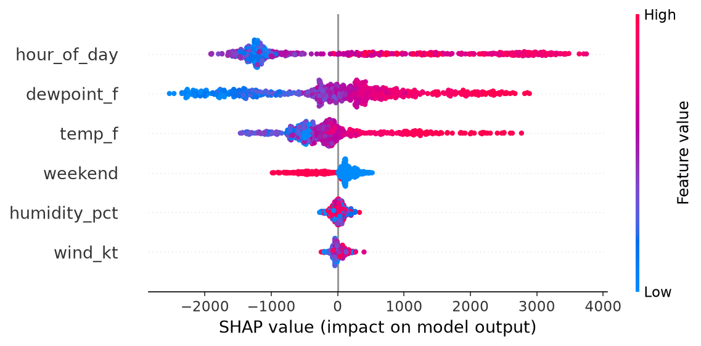
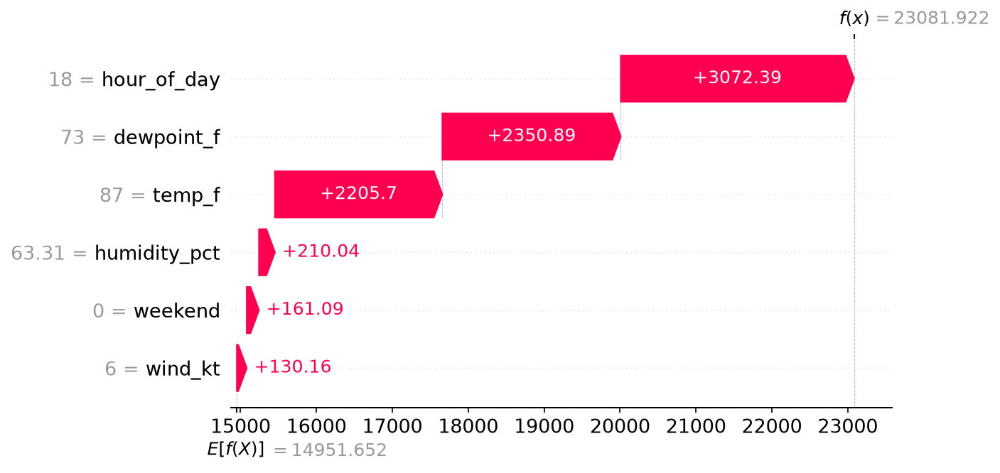

Chapter 2 — Tuning Models & Explainable AI#
🔗 Notebooks for this chapter
Open in Colab and Runtime → Run all — data loads from a stable link, nothing to upload.
Permutation Importance Regression
 GitHub
GitHuba Undersampling
GitHubb Oversampling
GitHubc SMOTE (numeric features only)
GitHubd SMOTE (numeric and categorical features)
GitHube SMOTE with ML implementation
GitHubCross Validation
GitHubPartial Dependence Regression
GitHubSHAP From Scratch Regression
GitHubLIME From Scratch Regression
GitHubRegression Spot Check
GitHuba Advanced Pipelines Regression
GitHubClassification Spot Check and Pipelines
GitHubGeneral Modeling Framework Advanced
GitHuba Pipelines Grid Search Classification
GitHubHyperparameter Tuning Widgets
GitHubauto ML and TPOT updated
GitHubOptuna NNs
GitHubscripts 1 Regression Spot Check
GitHubscripts 1a Advanced Pipelines Regression
GitHubscripts 2 Classification Spot Check and Pipelines
GitHubscripts 2a Pipelines Grid Search Classification
GitHubscripts 3 Hyperparameter Tuning Widgets
GitHub
This chapter is about building models you can trust and explain. First we deal with the data problems that quietly wreck models (imbalance), then we tune hyperparameters honestly with cross-validation and pipelines, and finally we crack the black box open with model-agnostic interpretability.
2.1 Imbalanced data and sampling#
Real classification targets are often imbalanced — far more zeros than ones (sensor failures, fraud, rare disease). A greedy model just predicts the majority class and scores 90% accuracy while being useless (it can’t beat predicting “everything is normal”). The fix is sampling to balance the classes:
Undersample the majority (throw away some zeros).
Oversample the minority (duplicate the ones).
SMOTE — synthesize new minority examples by interpolating between real ones; SMOTENC handles mixed numeric/categorical data.
Resample the TRAINING partition ONLY
SMOTE and over/under-sampling touch the training data only. The validation and test sets must keep the original, real-world class distribution — otherwise you’re scoring your model on synthetic data, which tells you nothing about reality. This is the single most common way students invalidate their own results.
And don’t report one accuracy number — repeat the sampling-and-fitting many times and report the distribution: mean, standard deviation, and a confidence interval (“accuracy was 88–94% (95% CI), mean 92%, SD 2%”). A range is an honest answer; a single number is a lucky one.
2.2 Cross-validation#
A single train/test split is one roll of the dice. k-fold cross-validation splits the training data into k folds, trains on \(k-1\) and validates on the held-out fold, rotating through all k — so every row gets a turn as validation. Repeated k-fold does this several times with different shuffles; LOOCV (leave-one-out) and LOGOCV (leave-one-group-out) are extremes for small or grouped data. CV gives you that distribution of scores, and — crucially — you tune hyperparameters on the cross-validated training folds, never on the test set.
2.3 Spot-checking, pipelines, and grid search#
Before tuning anything, spot-check: throw a handful of default models at the problem to see whether the data has any signal worth modeling. If nothing beats the baseline, no amount of tuning will save you.
Then tune properly — and tune inside a pipeline so every preprocessing step is refit within each CV fold (no leakage). A Pipeline chains preprocessing and model into one object; GridSearchCV searches hyperparameter combinations with cross-validation:
from sklearn.pipeline import Pipeline
from sklearn.preprocessing import StandardScaler
from sklearn.decomposition import PCA
from sklearn.ensemble import RandomForestRegressor
from sklearn.model_selection import GridSearchCV
pipe = Pipeline([('scl', StandardScaler()),
('pca', PCA(0.95)), # optional dimensionality reduction
('clf', RandomForestRegressor(random_state=42))])
grid = GridSearchCV(pipe,
param_grid={'clf__n_estimators': [100, 300],
'clf__max_depth': [None, 5, 10]},
cv=5, scoring='neg_mean_absolute_error')
grid.fit(X_train, y_train) # scaler+PCA refit inside every fold — no leakage
print(grid.best_params_)
Why a pipeline, not just a script?
A pipeline guarantees the scaler is fit on the training folds only during cross-validation — do it by hand and you’ll eventually leak test information into your scaling and never know. As datasets grow, beyond grid search you can use Optuna or autoML to search smarter; but the pipeline is the non-negotiable foundation that keeps the search honest.
2.4 Explainable AI#
A tuned model that nobody understands is a liability. Two model-agnostic tools open any black box:
Permutation importance. Shuffle one feature’s column in the test set, leave the rest intact, and re-score. If shuffling crime rate tanks the \(R^2\), crime was important; if nothing changes, it wasn’t. It directly measures how much the model relies on each feature.
from sklearn.inspection import permutation_importance
r = permutation_importance(model, X_test, y_test, n_repeats=30, random_state=42)
# r.importances_mean ranks features by how much shuffling each one hurts performance
Partial dependence plots (PDPs). Take a feature (say crime), sweep it across its range while holding the other features fixed, and re-predict — repeat for every row to get hundreds of individual conditional expectation (ICE) curves, then average them. The result shows how the model’s prediction responds to that feature: linear, nonlinear, flat, a cliff.
Permutation importance and PDPs are global — one story for the whole dataset. The next two tools go local: they explain a single prediction.
SHAP — fair credit from game theory. For one prediction, how much did each feature push it above or below the baseline \(E[f(x)]\)? SHAP borrows the Shapley value (Nobel-winning cooperative game theory): a feature’s contribution is its average marginal contribution across every coalition of the other features. It is the only attribution that satisfies local accuracy (the contributions sum exactly to prediction − baseline), symmetry, dummy, and additivity all at once. We build it from scratch — enumerating coalitions and weighting marginal contributions by hand — before checking it against the shap library. Average the absolute SHAP values over many rows and you recover a permutation-importance-style ranking; scatter them and you recover a PDP. SHAP unifies the chapter.
# SHAP from scratch: average marginal contribution over all coalitions S
phi_i = sum( weight(|S|, p) * (v(S | {i}) - v(S)) for S in subsets_without(i) )
# where v(S) marginalizes "absent" features over a background sample, and
# weight(s, p) = s! (p - s - 1)! / p! -> the fraction of orderings with S before i
LIME — a local linear surrogate. Any curvy model, viewed up close, looks almost straight. LIME perturbs the row you want to explain, asks the black box for predictions on that cloud of nearby points, weights them by closeness (a kernel of width \(\sigma\)), and fits a weighted linear regression. Its coefficients are the local explanation — on a 1-D curve they literally recover the derivative. It’s fast and intuitive, but the kernel width is a real knob: too wide and the “local” story drifts global, so always report it and check the surrogate’s local \(R^2\). SHAP and LIME answer the same question differently — when they agree on direction, trust the story.
# LIME from scratch
Z = x0 + noise # 1) perturb into a neighborhood
yz = model.predict(Z) # 2) query the black box
w = exp(-dist(Z, x0)**2 / (2*sigma**2)) # 3) weight by closeness
coefs = LinearRegression().fit(Z, yz, sample_weight=w).coef_ # 4) local importances
Finally, autoML (e.g., TPOT) automates the whole search — preprocessing, model choice, and tuning — into one pipeline. It’s a great way to set a strong benchmark, as long as you keep the train-only and explainability discipline from this chapter.
2.5 SHAP in practice — the shap library (Lab 2)#
Draft — figures from a validation run
The figures below come from a validation run of the Lab 2 model; we’ll refresh them (and tighten the wording) with plots from the in-person class run. The code and ideas are final.
Building SHAP from scratch (§2.4) is how you trust it — you watched the contributions sum exactly to the prediction. In practice you don’t enumerate coalitions yourself: the shap library does it fast, and for tree models (random forests, gradient boosting) exactly. Lab 2 puts this on a real model — a random forest that predicts New England electricity demand (\(R^2 \approx 0.90\)) from weather and time.
The whole engine is three lines:
import shap
explainer = shap.TreeExplainer(model) # reads the trained forest
shap_values = explainer(X) # one push, in MW, per feature, per row
shap_values is now a table the same shape as X, where every cell is a push in the target’s units — here, megawatts. Every plot is just a different view of that one table.
Global — the beeswarm. shap.plots.beeswarm(shap_values) draws one dot per row for each feature, placed by its push and colored by the feature’s value. Read it top to bottom for which features matter overall, and in which direction. On the energy model, hour_of_day, dewpoint_f, and temp_f do the heavy lifting, and high (red) values push demand up. Averaging |SHAP| down each feature recovers a permutation-importance-style ranking — the same story §2.4 told, now with direction attached.
{kind=link}

Fig. 1 Global (beeswarm). Each dot is one hour; color is the feature’s value (red = high, blue = low), position is its push on the prediction in MW. hour_of_day, dewpoint_f, and temp_f dominate, and their high values push demand up.#
Local — the waterfall. shap.plots.waterfall(shap_values[i]) explains one prediction: start at the average prediction \(E[f(X)]\) and stack each feature’s push until you land on that hour’s exact prediction. This is the answer you hand a stakeholder — “demand is high this hour because it’s 6 PM, it’s muggy, and it’s hot.”
{kind=link}

Fig. 2 Local (waterfall). The peak-demand hour, explained: from the average prediction \(E[f(X)] = 14{,}952\) MW, each feature’s push (hour of day, dew point, temperature…) stacks up to the model’s exact prediction, \(f(x) = 23{,}082\) MW. The pushes sum to the prediction exactly — that’s local accuracy.#
# the honesty check — local accuracy, in MW
i = int(np.argmax(model.predict(X))) # the peak-demand hour
shap.plots.beeswarm(shap_values) # global (Partner A)
shap.plots.waterfall(shap_values[i]) # local (Partner B)
# base value + sum(shap_values[i]) == model.predict(X)[i] e.g. 14,952 + pushes = 23,082 MW
Dependence. shap.plots.scatter(shap_values[:, "hour_of_day"], color=shap_values[:, "temp_f"]) plots a feature’s push across its range, colored by a second feature — a PDP-like view that also exposes interactions.
This is Lab 2
In Lab 2 — Explaining a Model (SHAP), two partners split exactly this: Partner A ships the beeswarm (global), Partner B the waterfall (local), through the branch → PR → review → merge loop — and the report only closes when they say whether the global and local stories agree. The TreeExplainer line and shap_values are given; the students write one plotting line each.
Wrap-up#
Key takeaways
Imbalanced data breaks accuracy; rebalance with under/over-sampling or SMOTE — on train only — and report a distribution (mean/SD/CI), not one number.
Cross-validation (k-fold, repeated, LOOCV/LOGOCV) gives honest, distributional scores and is where you tune.
Spot-check for signal, then tune inside a
PipelinewithGridSearchCV(or Optuna/autoML) to prevent leakage.Open the black box with permutation importance (shuffle a feature, watch performance) and PDPs (averaged ICE curves) — both global.
Explain a single prediction with SHAP (fair, additive credit from game theory; built from scratch over coalitions) and LIME (a weighted local linear surrogate; mind the kernel width). When they agree, trust the story.
In practice, the
shaplibrary does the coalition work for you (exactly, for trees):TreeExplainer→shap_values→ beeswarm (global) and waterfall (local). Lab 2 ships both on the energy-demand model.autoML/TPOT automates the search — a strong benchmark, with the same discipline.
📌 Lecture key points#
Distilled takeaways from the video lectures behind this chapter — click each to expand.
Majority Undersampling
Imbalanced data breaks accuracy (greedy model predicts the majority).
Undersample the majority class to balance.
Repeat sampling → report metrics as a distribution (mean/SD/95% CI).
Loses data but simple and fast.
A03 leverages this.
Oversample Minority
Oversample (duplicate) the minority class to balance.
Keeps all majority data.
Risk of overfitting duplicated points.
Compare against undersampling.
Part of the sampling toolkit.
SMOTE — Pt 1 & Pt 2 (numeric only)
SMOTE synthesizes new minority examples by interpolating between real ones.
Pt 2: numeric-only feature handling.
More principled than naive oversampling.
Apply on the TRAINING partition only.
Validation/test keep the original distribution.
SMOTENC
SMOTENC handles mixed numeric + categorical features.
Same train-only rule.
Choose the right SMOTE variant for your data types.
Avoids breaking categorical encodings.
Completes the synthetic-sampling options.
SMOTE with ML
Integrate SMOTE inside the ML workflow (within CV folds).
Prevents leakage from resampling the whole set.
Report error metrics as a distribution (CI).
“Accuracy was 88–94% (95% CI), mean 92, SD 2.”
Sampling + modeling combined honestly.
CV Pt 1 (K-fold, repeated k-fold)
k-fold CV: rotate folds so every row is validated once.
Repeated k-fold adds shuffles for a richer score distribution.
Tune hyperparameters on the CV training folds, never the test set.
A single split is one roll of the dice.
Foundation for honest tuning.
CV Pt 2 (LOOCV, LOGOCV)
LOOCV (leave-one-out) for very small data.
LOGOCV (leave-one-group-out) for grouped data.
Extremes of the k-fold idea.
Choose CV scheme to match data structure.
Avoids group leakage.
Intro to “Spotcheck” Models and Pipelines
Spot-check: throw several default models to see if the data has any signal.
If nothing beats the baseline, tuning won’t save you.
Introduces
Pipeline(chain preprocessing + model).Pipelines prevent leakage inside CV.
Sets up grid search.
Pipelines with preprocessing and LIGHT hyperparameter tuning
Wrap scaler (+PCA) + model in a
Pipeline.Pipeline refits preprocessing inside each fold (no leakage).
Start with light tuning to get a feel.
clf__paramsyntax for nested params.Reproducible, leakage-safe tuning.
Ensemble Methods and Spotchecking, then GridSearchCV
Spot-check ensembles (RF, GBM) for signal.
GridSearchCVsearches hyperparameter combos with CV.Pick
best_params_; score with a chosen metric.Ensembles often strong baselines.
Grid search = exhaustive but honest.
Advanced Pipelines (pipelines + hyperparameters together)
Tune preprocessing and model hyperparameters simultaneously.
One pipeline object searched by GridSearchCV.
Cleaner, leakage-safe, reproducible.
Scales to many preprocessing choices.
The professional pattern.
Advanced Pipelines for Classification Models
Same advanced-pipeline pattern for classification.
Spot-check + grid search classifiers in pipelines.
Evaluate with confusion-matrix metrics.
Handle imbalance within the pipeline.
Reproducible classification tuning.
Introduction to Permutation Importance
Shuffle one feature’s column in the test set, keep others, re-score.
Big drop in R² ⇒ that feature was important.
Model-agnostic interpretability.
permutation_importance(..., n_repeats=...).Ranks features by reliance.
Permutation importance as storytelling and variable selection
Use permutation importance to explain and to select variables.
Tell a clear story about what drives predictions.
Drop low-importance features to simplify.
Repeated permutation for stability.
Communicates model behavior to stakeholders.
Intro to Partial Dependence Plots (PDPs)
PDP = average of per-row ICE curves: sweep one feature, hold others fixed, re-predict.
Shows how the model responds to a feature (linear/nonlinear/flat/cliff).
Model-agnostic.
Complements permutation importance (which feature vs how it’s used).
Built on the test partition.
Clunky PDPs and linear vs. nonlinear responses
PDPs reveal nonlinear feature responses a linear model would miss.
“Clunky” steps show discretized sweeps.
Interpret shapes for business insight.
Caveats when features are correlated.
Deepens xAI intuition.
SHAP values from scratch
SHAP explains one prediction: each feature’s push above/below the baseline \(E[f(x)]\).
Rooted in game theory — a feature’s value is its average marginal contribution over all coalitions.
Local accuracy: baseline + Σ SHAP = the prediction, exactly (plus symmetry, dummy, additivity).
Built from scratch by enumerating coalitions; absent features marginalized over a background sample.
mean|SHAP| recovers permutation importance; a SHAP dependence plot recovers the PDP.
SHAP with the shap library (Lab 2)
From-scratch SHAP builds trust; the
shaplibrary does the coalitions fast (exact for trees).Engine:
explainer = shap.TreeExplainer(model)→shap_values = explainer(X)— pushes in the target’s units (MW).Global =
shap.plots.beeswarm(which features matter + direction); local =shap.plots.waterfall(one prediction’s story).Local accuracy holds numerically: base value + Σ SHAP = the exact prediction.
Lab 2: Partner A = beeswarm, Partner B = waterfall, on the energy random forest (\(R^2\approx0.90\)).
LIME from scratch
LIME fits a simple local linear surrogate to the black box around one prediction.
Recipe: perturb → predict → weight by closeness → fit a weighted line → read coefficients.
On a 1-D curve it recovers the local slope (derivative) — verified by hand.
The kernel width is the master knob; check the local \(R^2\) for fidelity.
Fast and intuitive vs SHAP’s fairness guarantees — when they agree on direction, trust the story.
TPOT and autoML
autoML (TPOT) automates preprocessing + model choice + tuning into one pipeline.
Great for a strong benchmark.
Keep the train-only and explainability discipline.
Searches smarter than brute grid search.
A04 leverages this.